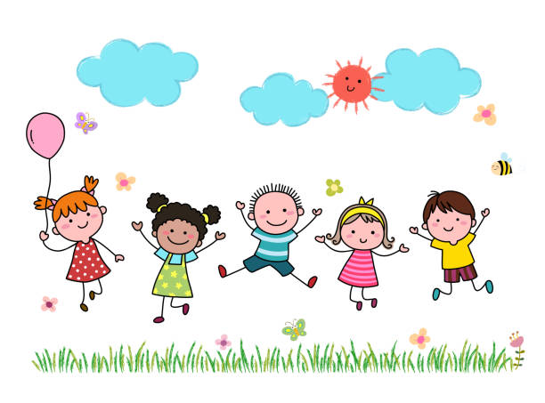
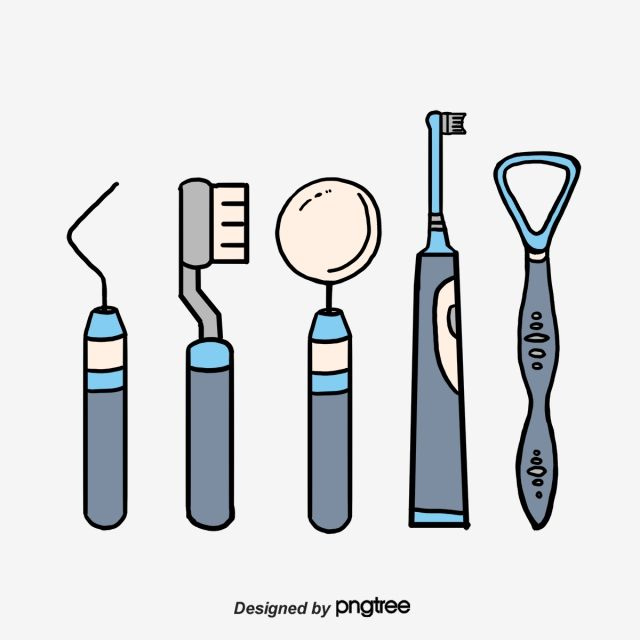
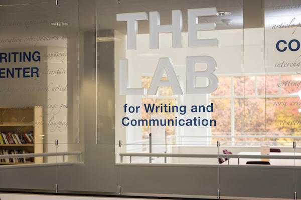

Work Experience
I have had myriad of jobs, ranging from dental insurance coordinator to childcare worker. Currently, I work as a nanny for a
four year old girl. I also work at the Mason Writing Center as a Peer Consultant.



Peer Consultant
George Mason University Writing Center– Fairfax, VA
January 2024 to Current
Responsibilities:
- Workshop writing projects of all kinds: literary, analytical, technical, and otherwise.
- Encourage and exemplify learning techniques such as scaffolding and positive transfer of skills.
- Advise and collaborate with students on areas to improve in their respective writing conventions.
- Communicate with students regarding their educational needs and desires.
- Advise students regarding the resources the school has and how to best utilize these resources.
Floater/Teacher’s Assistant
Exploring Learning and Fun Child Enrichment Center – Chantilly, VA
June 2023 to January 2024
Responsibilities:
- Assist students in resolving conflicts in the classroom.
- Cleaning, organizing, and keeping classrooms to industry health standards as required as a childcare facility.
- Administrative tasks such as organizing files, keeping certificates up to date, relaying information to parents
and updating documentation for children.
Treatment Coordinator
Loudoun Dental Associates/Smilez Pediatric Dental Group - Dulles, VA
November 2020 to June 2022
Responsibilities:
- Creating documentation and filing appeals based on rejections from insurances to maintain the best care available for patients.
This includes disputing insurance claims on behalf of patients when insurance fails to pay or requires additional information.
- Coding and classifying the exact medical needs for patients and presenting comprehensive breakdowns
regarding insurance requirements and payouts
- Discussing patient’s treatment needs and insurance eligibility, scheduling appointments, reviewing, and submitting E-claims.
- Receiving, processing, and entering payments from both patients and insurances into respective accounts using Eaglesoft.